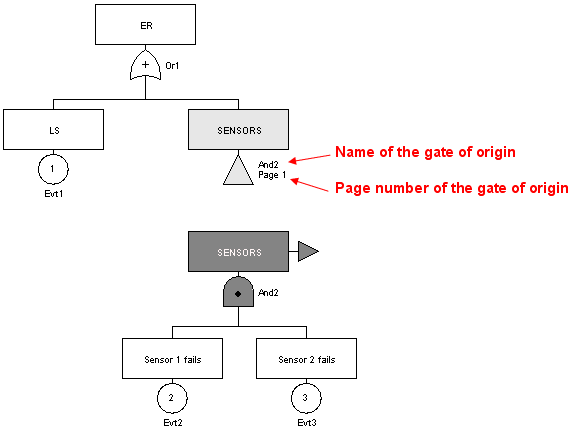

To enter the different Gates, select the corresponding symbol on the vertical toolbar. A new element is then created whenever you click right on the graphical entry area. Each of the model's gates has five parameters:
A number: These numbers are, with the type, the gates' true identifiers (those which will be used by the computation engine). That is why, when you wish to change the numbers of certain gates, you must remember that two gates cannot have an identical number. They are automatically incremented as new elements are created.
A name: It is a parameter which is defined automatically and which cannot be modified by the user. The name of each gate consists of its "type" followed by its "number" (e.g.: "And1" or "KofN3").
A "K out of N" integer: This field is only accessible in the case of K out of N gates. It allows you to choose the value of K (K equals 1 by default).
A comment: This field adds text inside the gate. This function makes the model more legible (by giving the specific features of these elements).
A type: When a gate has been created, its type can be modified to one of the five types available in the drop-down list.
To enter the model's Events, select the corresponding symbol on the vertical toolbar. A new element is then created whenever you click left on the graphical entry area. Each of the model's events has five parameters:
A number: These numbers are, with the type, the events' true identifiers (those used by the computation engine). That is why, when you wish to modify the numbers of certain events, you must remember that two events cannot have an identical number. They are automatically incremented as new elements are created.
A name: The default name assigned to the events is Evti for the "i" the element created. You are recommended to replace this name by something more mnemonic to increase the model's legibility.
A comment: This field adds text inside the event. This function increases the model's legibility (by giving the specific features of these elements).
A law: This element is used to model the event's random aspect. You can choose from many laws which must then be configured (cf. detailed description of the laws later on in this document).
A type: When an event has been created, its type can be modified from the four types available in the drop-down list.

For each gate or event, you can set it initiator (with a right clik). This attribut must be seen from an "Event-Tree" point of view. In an event-tree an initiator is an event that must happen befo barriers set the system in a safe mode. In order to have a Top-event, iniator event must happen after barriers failure. Setting initiator attribut on and event means that it must appear after the "non-initiator" events. This setting has an impact on UFI computation only. There is no impact on Probability of Equivalent lambda.
When the gates and events have been created, they must be interconnected to establish the tree's logic. There are two possible types of connections: "gate -> gate" and "gate -> event" connections. To make a connection, proceed as follows:
Click the corresponding icon on the vertical toolbar.
Select the start gate by a click left on the specific zone (a dot for "AND" gates, a cross for "OR" gates, etc.) and keep the button pressed.
Move the mouse to the element to be connected.
Release the mouse button.
NB: The above icon only allows a single link to be created at a time. If you wish to create several links in succession without having to reselect the link creation icon each time, use the icon shown below: .
It is a very specific gate which inverts the logic of the subtree which is downstream of it.
To insert a "Negation" in a tree, proceed as follows:
change the type of an existing gate by using the drop down list;
OR create a new a new gate with the type "Negation":
Click left on the corresponding icon on the vertical toolbar.
A new element will then be created whenever you click left on the graphical entry area.
You then just have to configure and connect the "Negation" like a conventional gate: link the top part (above the circle) to the bottom part of a gate and link the bottom part (below the circle) to the top part of an event or gate.

To add a comment anywhere on the chart, click the pencil icon and place yourself on a point in the graphical input zone. The Comment dialogue box opens where you can enter the desired comment.
Note: Character "%" is a reserved character, it must be type twice "%%" in order to display "%".

It may be useful to observe the change in the different parameters of the model. It is also usefull to see a result next to its corresponding system. To do this, use dynamic fields by selecting the corresponding icon on the vertical tool bar:

The dynamic fields are a type of "improved comments". They can be used not only to enter words or phrases but also to insert model values or results.

If you want to display informations about a data of the model, you must use the following syntax:
$data.'type of data'.'field used o search data'('value that the field must match).'information you want to display for the selected data'
We can analyze the above windows as follows: I am looking for a "parameter" which "name" is 'lambda", and I want to display its "value". When you type the first letters, a completion system helps to type script without error.
If you want to display a result of the result-bank, the syntax is the following:
$result.bank('path in the bank').target('target result').'what you want to display'.'at what time'
We can analyze the next picture as follows: I am looking for a result which path in the bank is "default-Moca", I want results for "TS3 for 'available' valriable" and I want its value for the "last" time. If last is replaced by time(10) we obtain value at t=10.

You can also display a summary of result. Replace 'what you want to display' by summary. In this case, summary is the last word of this script.
A button has been added in 2013 version, it is a script generator for model data.
All the graphical elements can normally be edited with a double-click on them or using the Edit - Properties menu, or using the shortcut Alt + Enter.
When you click right on a gate, you can modify any parameter (except the name):
change the number;
specify the value of K if the gate is a "K out of N" type;
read and/or modify the comment part;
modify the type of gate to one of the five types available in the drop-down list:
"OR" gate: an "OR" type logic gate is applied to the elements connected downstream.
"AND" gate: an "AND" type logic is applied to the elements connected downstream.
"K of N": a "K of N" type logic is applied to the elements connected upstream.
"Comment" gate: this gate has no effect from the logic viewpoint and is only used to comment on the branch where it is located.
"NOT" gate: cf. above.

When you click right on a gate, you can modify any parameter (except the name):
to change the number;
to enter the event name;
to read and/or modify the comment part;
to read and/or modify the law governing the event.
to modify the type to one of the four available types in the drop-down list:
Elementary event;
Basic event;
To be developed event;
"Home" event.

The names of these events simply have a "graphical" impact on the tree structure. There is no impact on the logic function which will be generated to perform the computations. The aim is simply to simplify re(reading) the fault tree
The law part is configured in several steps:
Choose the law from the twenty-three available in the drop-down list.
Configure the law (a drop-down list of the module's parameters is available for each field to be filled in).

Uncertainty computations can be introduced for each of the parameters, with a choice of the law and of the corresponding parameters (cf. later on in this document: a detailed description of the uncertainty computations on the parameters).

The concept of a shortcut (or repeated element) was introduced in the Fault Tree module for four main reasons:
To link together portions of the model;
To avoid graphicaly complex model, and keep readability;
To simplify the use of the Group function (cf. below);
To highlight what is essential and what is not.
Let a fault tree contain three base events, one "OR" gate (critical event) and one "AND" gate.

The aim here is to create a shortcut to the gate (identical trasfert gate) called "And2" to be able to dissociate the "And2" subtree from the main tree. Proceed as follows:
Delete the existing link between gate "Or1" and gate "And2".
Click left on the of tool-bar then click on "And2" Gate.

Connect the shortcut created in this manner to gate "Or1".

The name of the original gate and the page number where the original gate is located are shown beside the shortcut to gate "And2".
Although linked from the "computational logic" viewpoint, the two trees are now totally graphically independent. They can now be placed on different pages or in different groups (cf. later on in this document).
From the logic viewpoint an event can have an "impact" on several "branches" of the same tree. To correctly model this case, this event must be duplicated. To do this, select the corresponding icon on the vertical toolbar, then click the event to be duplicated:

The repeated event must now be inserted in the model, given that at each instant its state will be equal to that of the original event.
NB: Obviously, if the original event is deleted then the duplicated event is also deleted.
The use of shortcuts allowed us to obtain two Fault Tree which have no graphical link between them. They communicate only by shortcuts. This can be used, for example, to place each subpart on a different page:
Create a new page by clicking the corresponding icon in the icon bar (or use menu Tools - New Page). A page number 2 is thus created.
Return to page 1 by selecting the page using the page selector in the ideographic command bar (or use menu Tools - Page manager).
Select the part to be moved.
Open menu Tools - Change page.
Select page 2 and click . The part selected is transferred to page 2 but it continues to communicate with page 1 via the shortcuts.
Note: For large models the division method described above is very useful.
Another possibility for entering large Fault Tree is to use the Group concept. This is made possible by the shortcuts and the fact that the data is global for a document. This allows quite separate subparts to be created:
Select a subpart.
Use menu Group - Group. A dialogue box then opens asking for the name to be given to the group being created.
Enter the desired name and click (e.g.: "System 1"). The group is created: the subnet is replaced by a rectangle assigned with the chosen name.


Each group can then be edited, renamed or ungrouped using the commands in the Group menu. The group can also be edited with a click right or using the "cursor down arrow" on the left of the page manager. In Edit mode, the submodel can then be modified as you wish. When the modification is terminated you return to the previous figure by exiting group editing by menu Group - Quit Group Edition, or using the "cursor up arrow" on the left of the page manager. It's also possible to choose a picture for a group by using Group - Change Picture menu.
Note: Groups can be grouped recursively.
To simplify model creation the Fault Tree module has different data entry aids to automate time-consuming operations.
To assist with the entry of the repeated parts of the Fault Tree "Copy / Paste and Renumber" mechanisms have been provided. This operation is carried out in 6 steps:
Select the part to be copied.
Click the icon, or use menu Edit - Copy or the shortcut Ctrl + C.
Click the icon, or use menu Edit - Paste and Renumber or the shortcut Ctrl + R.
A window appears where you choose the start number for the renumbering.
The previously selected part is copied and the copy is selected.
Move the copy to the desired location.
We then obtain the tree shown in the figure below:
Or1 and And2 gates from original tree are become Or3 and And4 for the copy;
Evt1, Evt2 and Evt3 events from original tree are become Evt4, Evt5 and Evt6 for the copy.

When copying to a new document, any data conflicts are handled in the following window:
Use data of destination document, this will replace the occurrences of the data in the source document by the data with the same name in the destination document.
Create a copy for each data in conflict, this will replace the occurrences of the data in the source document by a copy with a name with the suffix "copy".
Manually manage conflict, this allows you to choose whether you use the existing data or not, depending on the data. You can also specify the name of the copy by double clicking on the box in the "destination document" column. The names in this column are normally masked when the Use existing check box is selected, since it is the data which is already in the destination document which will be used.
The "Copy / Paste and Renumber" command creates new "instances" i.e. new subtree similar to the subtree copied:
Same graphical structure;
Same parameters;
The number and name of the events and gates change (new name: Evti for events and "type of gate"i for the gates, where i is the new number).
Same comments.
When identical transfer gates are part of the selection to be Copied / Pasted and Renumbered, they will then remain unchanged for the copy. They shall always point to the same gate if this gate is not part included in the selection to be copied.

In the above example, gate Or1 an event Evt1 have been renumbered normally. The shortcut to gate And2 has not been modified.
When a gate that part of a shortcut is also part of a selection hat is going to be "Copied /Pasted and Renumbered" and if the shortcut itself is not present, then the gate will be renumbered in the conventional manner.

In the above example, all of the events and gates have been renumbered normally.
When identical transfer gate (and their corresponding original gate) are included in the selection to be "Copied / Pasted and Renumbered", then new shortcuts will be created and they will be linked to the new gates.
In the above example, the gate that is linked to a shortcut has been renumbered (And2 -> And4) and so its shortcut has also been modified.
You can navigate between an element's different shortcuts, using menu Tools/Navigate to shortcuts. A window opens and displays the list of shortcuts. Clicking on a shortcut automatically positions the view on this shortcut. You can return to the original element by clicking on its name at the top of the window.
In addition to the "Copy / Paste and Renumber" command there is an ordinary "Copy / Paste" function. It is used to make a single copy without renumbering. We thus obtain double elements which, from a formal viewpoint, is incorrect but which must be temporarily tolerated to simplify data entry.
Where possible, the "Copy / Paste and Renumber" function must be used in preference to the simple "Copy / Paste" function to minimise the risk of errors. But when it is used you must take the necessary precautions to re-establish the correct numbering to eliminate the duplicates.
When creating the Fault Tree it may be necessary to change a large part of the elements in the models: changing the names, numbers, etc. The "Replace all" function in the Edit menu allows you to perform overall changes:
Use the Edit / Overall changes function.
Choose the type of elements to be modified among available tabs.
The "Find / Replace" part changes a character string present in one or more variable labels, place labels or transition labels. It is replaced by the string entered in the "Replace" part.
The "Renumber" part only concerns the places. It is used to change place numbers. You indicate a Start number then specify a constant Step, or Add a constant value to the current numbers.
Click to return to the chart. The changes are validated.
Note: The name changes and renumbering can be done manually if the necessary precautions are taken (avoiding duplicates, etc.). You click the Future number or Future name column and enter the change. Do not forget to validate it with the "ENTER" key.
The "Replace selection" function is equivalent to a "Replace all" but only applied to the selected elements. Only the selected gates and events can be replaced.
NB: The "Replace selection" function does not allow the model's parameters to be replaced.
File - Doucument properties menu enable to save information about document : name, version, comment, ... These informations are available in General tab.
Images may be very useful to represent sub-system. GRIF 2013 enables to save images that can be used in different parts of software (groupes, prototypes, ...). Images management is made in Images tab.
 icon.
A double click in File column enables to select an picture (jpg, gif or png).
A double click in Description column enables to give a name or a
description to selected image.
icon.
A double click in File column enables to select an picture (jpg, gif or png).
A double click in Description column enables to give a name or a
description to selected image.
Once in document, picture can be linked to a groupe with Group - Picture change menu.
Images are saved indide document, pay attention to picture size. Because images are inside document, you have to re-add picture if picture is modified erternaly.
To improve the legibility of the model the selected elements can be aligned vertically or horizontally. To do this, use the Align command in the Tools menu.
The following figure shows how the command works. For example, to align selected places and transitions vertically, proceed as follows:
Select the elements (places, transitions, comments, etc.) to be aligned;
Go into the Tools menu and select the Align function;
Choose the type of alignment: Align center;
Click left on the mouse.
Similarly, to align elements horizontally select the type Align middle which aligns the ordinates while keeping the abscissa constant. The principle is the same as that described above.
It may sometimes be useful to select several elements located in the four corners of the input zone. To simplify this type of selection click on each of the desired elements one by one while holding down the Shift key on the keyboard.
It is sometimes difficult to select an additional part of a model. To simplify the selection process, select a graphical element then use menu Select connex part in the Edit menu. The additional part can be selected directly by clicking on the element while keeping the Control button pressed.
When creating a model, if the page size is not big enough, it can be changed using the menus : Increase page size (Control+Keypad +), Reduce page size (Control+Keypad -), Page size (Control+Keypad /) under the Tools menu.
The Page size menu allows the user to edit the page dimensions directly.

Page zooms can be modified either by using the toolbar menu:

The padlock on the toolbar is used to apply the zoom to the current page or to all pages in the document.
 | The zoom applies to all pages in the document. |
| The zoom is applied only to the current page. |
Note that if an element is selected on the page, the zoom will centre the page on that element.
To be able to create an ordered and legible model quickly, the cross hair can be used to align the different elements with each other (but less accurately than the Align function in the Tools menu). The cross hair is enabled (or disabled) in the Graphics tab of the Option menu.
The following picture show how to quickly align two element of the model.

In order to align horizontally, select Align au middle which align keeping constant abscissa.
When objects are where you want, you can glue a set of object by right-clicking and selecting Glue. This command create a group (a graphical one, not a hierarchical one) with selected objects, so that moving one moves the others.
To be able to draw a line, polyline or arrow, the Line can be used. Draw the line and edit properties of line to make an arrow.

Data may not be used anymore, it can be used usefull to delete every unused data. To facilitate removal, use Data and Computations / Unused data deletion menu.